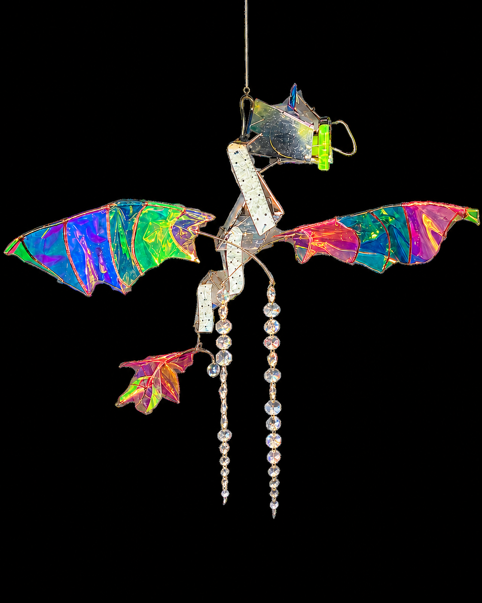
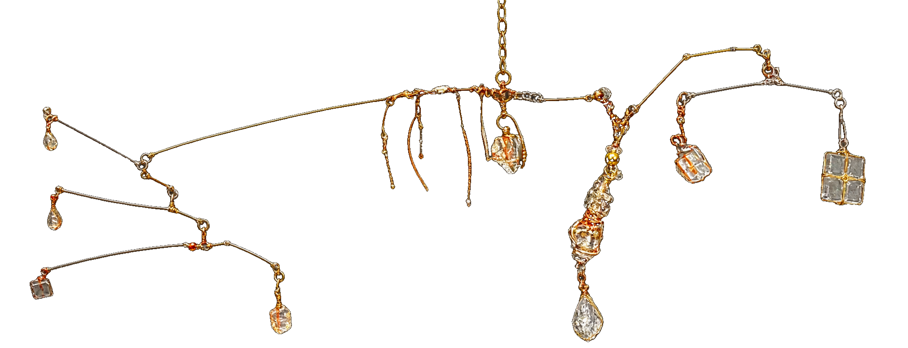
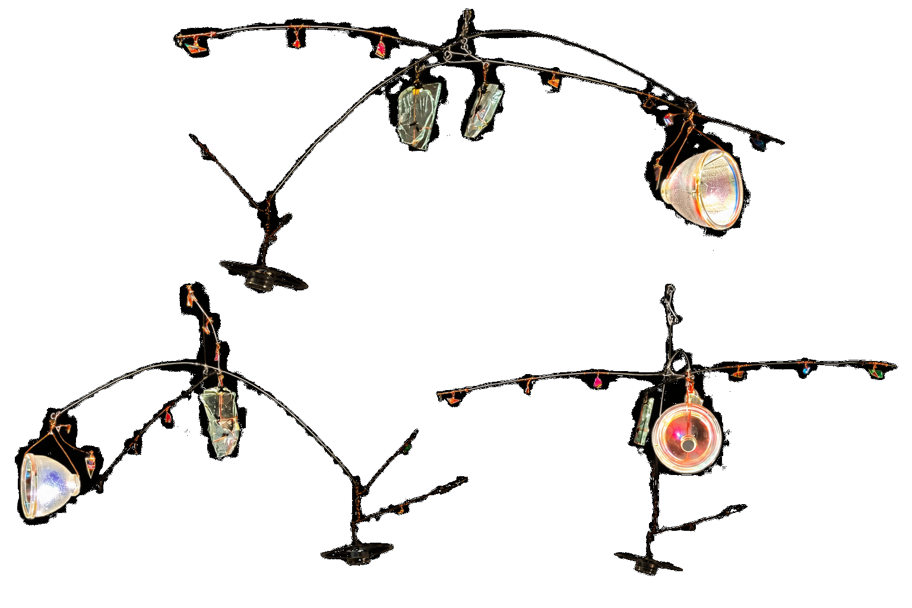
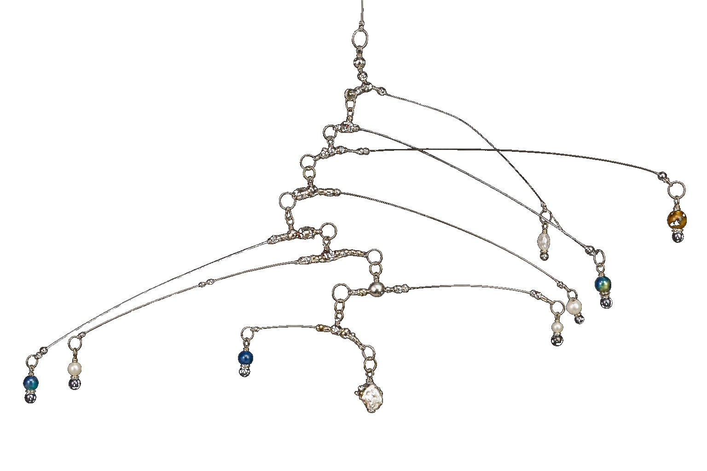

MANIPULATION
Embodied causal contribution
Ten minutes of comfortable continuous pedalling while viewing are compared with ten minutes of seated viewing under external energy.
ART AND EMPIRICAL AESTHETICS · PROPOSED RESEARCH PROGRAMME
How does embodied causal participation change an encounter with art?
This is a planned participatory sculpture and staged research programme. Visitor effort activates the installation and contributes real energy to a regulated, buffered light system. The first pilot asks how this embodied causal contribution changes agency, immersive aesthetic engagement and personal meaning.
Read the study design ↓
THE QUESTION
Sustainable Reflecting makes a small relation between action and consequence perceptible. A visitor’s effort activates the installation, contributes energy and is linked to a visible aesthetic event. The first study does not assume environmental behaviour change; it tests the immediate experience of causal participation.
THE EXPERIMENTAL IDEA
The first study compares continuous embodied causal participation with seated viewing under external energy. The regulated system keeps perceptual output comparable while the participant’s contribution remains real, immediate and logged.
A reflective mobile sculpture creates a slow, immersive field of moving light.
Participants either pedal comfortably for ten minutes while viewing, or view for the same duration from a matched seated position.
Viewing position, duration, light, movement and—if included—sound are standardized as closely as technically possible.
After the neutral Post 1 survey, all participants receive the same standardized, literature-informed reflection guide. It is not manipulated in the initial pilot.
PLANNED STUDY DESIGN
MANIPULATION
Ten minutes of comfortable continuous pedalling while viewing are compared with ten minutes of seated viewing under external energy.
STUDY PROCEDURE
After Post 1, every participant receives the same standardized reflection guide; its questions are separate from outcome measurement.
CONTROL
Viewing geometry, duration, light, movement, sound and instructions are matched and output equivalence is tested before the pilot.
OUTCOME HIERARCHY
Immersive aesthetic engagement is primary. State causal agency is the manipulation check and candidate mechanism; meaning, environmental relevance and later reflection are secondary or exploratory.
The initial study is a randomized two-condition feasibility pilot. It estimates the total effect of embodied causal participation; it does not isolate agency from effort, arousal, attention or novelty. A later study may test reflection guidance as an additional factor.
WHY THIS IS WORTH TESTING
The programme brings together work on embodied action, agency, empirical aesthetics and environmental psychology. It does not assume that participation is meaningful by itself. Instead, it tests whether an artistically integrated causal role changes the visitor’s immediate experience.
Reflective waste is not a decorative metaphor here. The material directs light back into the room; visitor effort activates the installation and contributes energy to a regulated system. This creates a concrete, technically truthful link between resource, body and consequence.
Research context includes empirical aesthetics, agency research and sustainability-related behaviour. The reflection manual is standardized and literature-informed; it contains no scored outcome measures. A detailed proposal, measures and analysis plan are available for discussion.
For the proposal or a discussion: research@tobiaseder.science ↗CONSTRUCTION IN FOUR UNIVERSES
The sculpture is built as four connected universes. Each grows from a different kind of discarded material and gives light a different character. The dragon moves between them, joining the worlds without making them identical.

Old discs become an iridescent creature and a field of changing colour.

Broken mirror fragments catch the visitor, the room and moving light.

Prismatic material will split the light into colour and cast it back into the space.
Destroyed projectors, small fragments and unexpected materials form a more unruly universe.

NEXT CONSTRUCTION DRAWING
The electricity and movement drawing will follow.

INVITATION TO COLLABORATE
I am looking for partners in empirical aesthetics, cognitive psychology, environmental psychology and neuroscience. The next step is to refine the mechanism, build the energy system and host a pilot study.
Request the research proposal ↗